🌲 集成学习：随机森林、AdaBoost、GBDT 与 XGBoost
集成学习简介
学习目标：
1.知道集成学习是什么？
2.了解集成学习的分类
3.理解bagging集成的思想
4.理解boosting集成的思想
【知道】集成学习是什么？
集成学习是机器学习中的一种思想，它通过多个模型的组合形成一个精度更高的模型，参与组合的模型成为弱学习器（基学习器）。训练时，使用训练集依次训练出这些弱学习器，对未知的样本进行预测时，使用这些弱学习器联合进行预测。
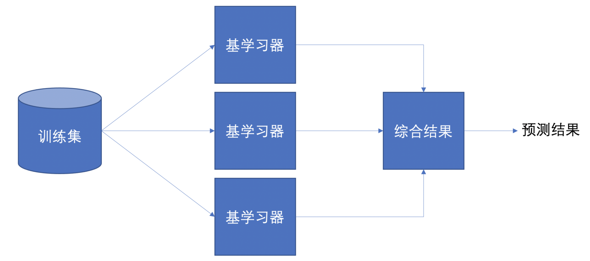
传统机器学习算法 (例如：决策树，逻辑回归等) 的目标都是寻找一个最优分类器尽可能的将训练数据分开。集成学习 (Ensemble Learning) 算法的基本思想就是将多个分类器组合，从而实现一个预测效果更好的集成分类器。集成算法可以说从一方面验证了中国的一句老话：三个臭皮匠，赛过诸葛亮
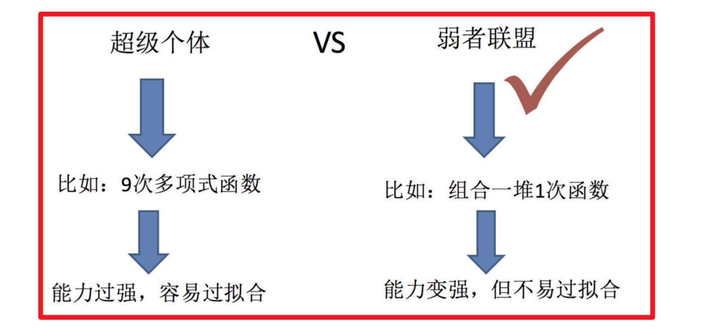
集成学习通过建立几个模型来解决单一预测问题。它的工作原理是 生成多个分类器/模型，各自独立地学习和作出预测。这些预测最后结合成组合预测，因此优于任何一个单分类的做出预测。
【了解】集成学习分类
集成学习算法一般分为：bagging和boosting。
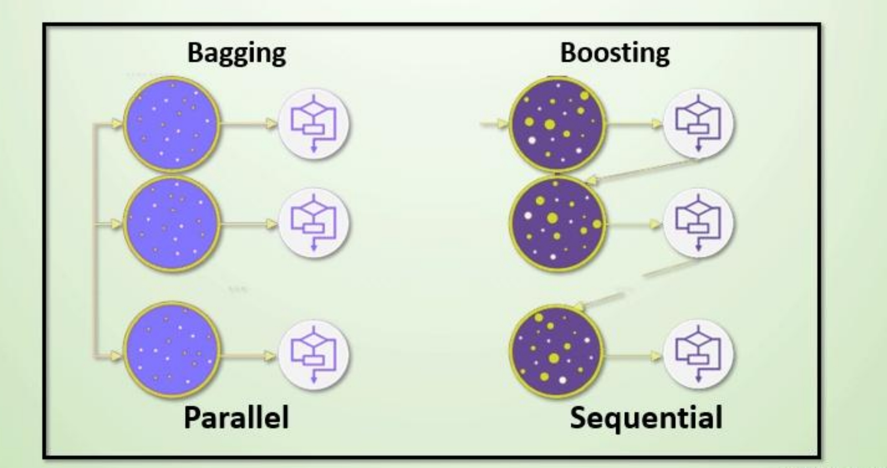
【理解】bagging集成
Baggging 框架通过有放回的抽样产生不同的训练集，从而训练具有差异性的弱学习器，然后通过平权投票、多数表决的方式决定预测结果。
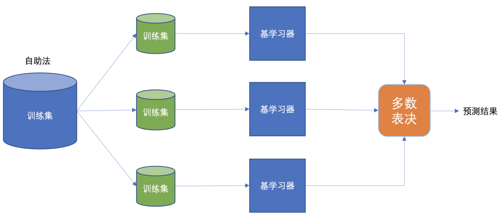
例子：
目标：把下面的圈和方块进行分类
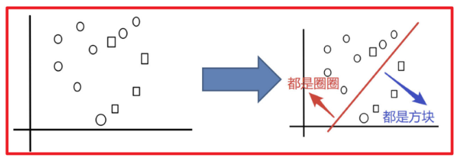
1) 采样不同数据集
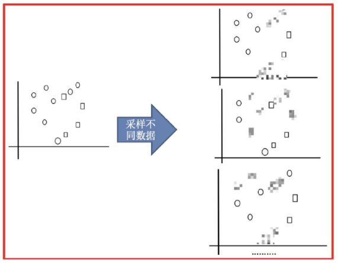
2)训练分类器
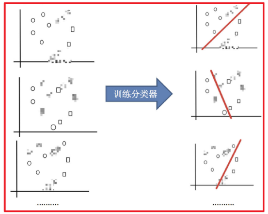
3)平权投票，获取最终结果
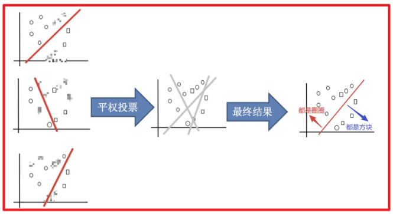
4)主要实现过程小结
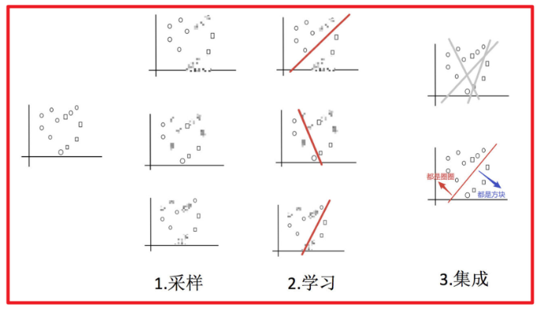
【理解】boosting集成
Boosting 体现了提升思想，每一个训练器重点关注前一个训练器不足的地方进行训练，通过加权投票的方式，得出预测结果。
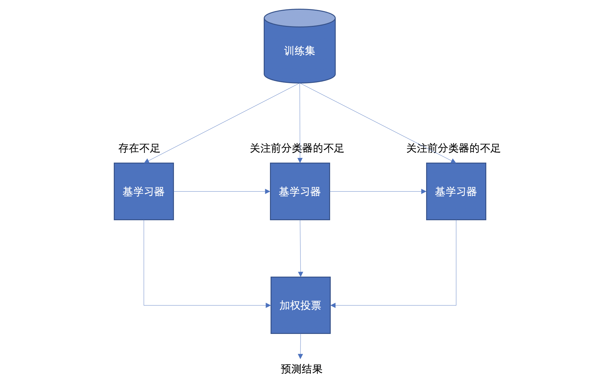
Boosting是一组可将弱学习器升为强学习器算法。这类算法的工作机制类似：
1.先从初始训练集训练出一个基学习器
2.在根据基学习器的表现对训练样本分布进行调整，使得先前基学习器做错的训练样本在后续得到最大的关注。
3.然后基于调整后的样本分布来训练下一个基学习器；
4.如此重复进行，直至基学习器数目达到实现指定的值T为止。
5.再将这T个基学习器进行加权结合得到集成学习器。
简而言之：每新加入一个弱学习器，整体能力就会得到提升
Bagging 与 Boosting
区别一:数据方面
- Bagging：有放回采样
- Boosting：全部数据集, 重点关注前一个弱学习器不足
区别二:投票方面
- Bagging：平权投票
- Boosting：加权投票
区别三:学习顺序
- Bagging的学习是并行的，每个学习器没有依赖关系
- Boosting学习是串行，学习有先后顺序
随机森林
学习目标：
1.理解随机森林的构建方法
2.知道随机森林的API
3.能够使用随机森林完成分类任务
【理解】算法思想
随机森林是基于 Bagging 思想实现的一种集成学习算法，它采用决策树模型作为每一个基学习器。其构造过程：
- 训练：
- 有放回的产生训练样本
- 随机挑选 n 个特征（n 小于总特征数量）
- 预测：平权投票，多数表决输出预测结果
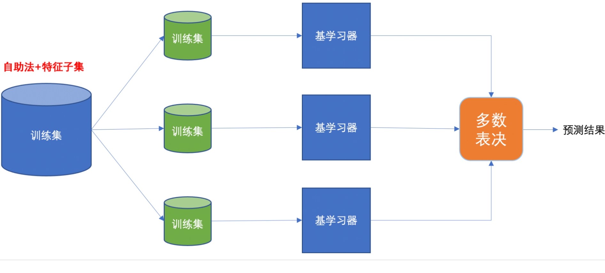
随机森林的步骤
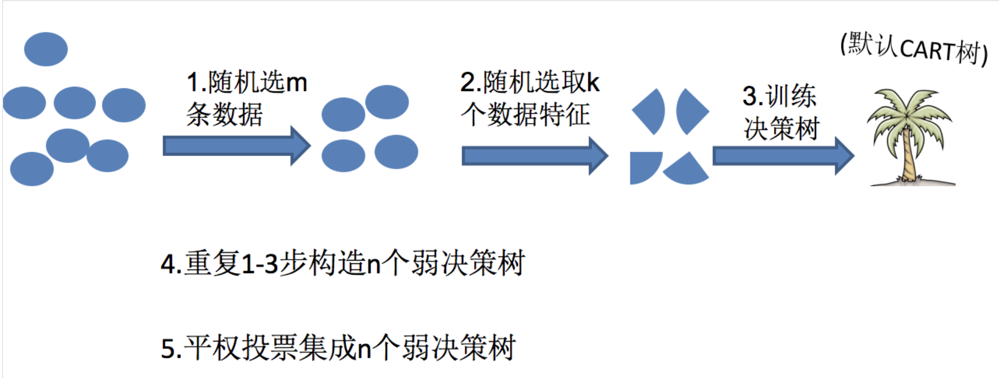
如上图：
首先，对样本数据进行有放回的抽样，得到多个样本集。具体来讲就是每次从原来的N个训练样本中有放回地随机抽取m个样本(包括可能重复样本)。
然后，从候选的特征中随机抽取k个特征，作为当前节点下决策的备选特征，从这些特征中选择最好地划分训练样本的特征。用每个样本集作为训练样本构造决策树。单个决策树在产生样本集和确定特征后，使用CART算法计算，不剪枝。
最后，得到所需数目的决策树后，随机森林方法对这些树的输出进行投票，以得票最多的类作为随机森林的决策。
说明：
（1）随机森林的方法即对训练样本进行了采样，又对特征进行了采样，充分保证了所构建的每个树之间的独立性，使得投票结果更准确。
（2）随机森林的随机性体现在每棵树的训练样本是随机的，树中每个节点的分裂属性也是随机选择的。有了这2个随机因素，即使每棵决策树没有进行剪枝，随机森林也不会产生过拟合的现象。
随机森林中有两个可控制参数：
-
森林中树的数量（一般选取值较大）
-
抽取的属性值m的大小。
思考
- 为什么要随机抽样训练集？
如果不进行随机抽样，每棵树的训练集都一样，那么最终训练出的树分类结果也是完全一样。
- 为什么要有放回地抽样？
如果不是有放回的抽样，那么每棵树的训练样本都是不同的，都是没有交集的，这样每棵树都是“有偏的”，都是绝对“片面的”，也就是说每棵树训练出来都是有很大的差异的；而随机森林最后分类取决于多棵树（弱分类器）的投票表决。
【知道】随机森林 API
sklearn.ensemble.RandomForestClassifier()
n_estimators：决策树数量，(default = 10)
Criterion：entropy、或者 gini, (default = gini)
max_depth：指定树的最大深度，(default = None 表示树会尽可能的生长)
max_features="auto”, 决策树构建时使用的最大特征数量
- If "auto", then
max_features=sqrt(n_features). - If "sqrt", then
max_features=sqrt(n_features)(same as "auto"). - If "log2", then
max_features=log2(n_features). - If None, then
max_features=n_features.
bootstrap：是否采用有放回抽样，如果为 False 将会使用全部训练样本，(default = True)
min_samples_split： 结点分裂所需最小样本数，(default = 2)
- 如果节点样本数少于min_samples_split，则不会再进行划分.
- 如果样本量不大，不需要设置这个值.
- 如果样本量数量级非常大，则推荐增大这个值.
min_samples_leaf： 叶子节点的最小样本数，(default = 1)
- 如果某叶子节点数目小于样本数，则会和兄弟节点一起被剪枝.
- 较小的叶子结点样本数量使模型更容易捕捉训练数据中的噪声.
min_impurity_split: 节点划分最小不纯度
- 如果某节点的不纯度(基尼系数，均方差)小于这个阈值，则该节点不再生成子节点，并变为叶子节点.
- 一般不推荐改动默认值1e-7。
【实践】 随机森林泰坦尼克号生存预测
这泰坦尼克号案例实战：
import pandas as pd from sklearn.compose import ColumnTransformer from sklearn.ensemble import RandomForestClassifier from sklearn.impute import SimpleImputer from sklearn.metrics import accuracy_score from sklearn.model_selection import train_test_split from sklearn.pipeline import Pipeline from sklearn.preprocessing import OneHotEncoder df = pd.read_csv("data/train.csv") features = ["Pclass", "Sex", "Age", "Fare", "Embarked"] X, y = df[features], df["Survived"] X_train, X_test, y_train, y_test = train_test_split( X, y, test_size=0.2, stratify=y, random_state=42 ) preprocess = ColumnTransformer([ ("num", SimpleImputer(strategy="median"), ["Pclass", "Age", "Fare"]), ("cat", Pipeline([ ("imputer", SimpleImputer(strategy="most_frequent")), ("onehot", OneHotEncoder(handle_unknown="ignore")), ]), ["Sex", "Embarked"]), ]) rf_pipeline = Pipeline([ ("preprocess", preprocess), ("model", RandomForestClassifier( n_estimators=200, max_depth=6, random_state=42, n_jobs=-1 )), ]) rf_pipeline.fit(X_train, y_train) print("测试集准确率：", accuracy_score(y_test, rf_pipeline.predict(X_test)))
超参数选择代码:
from sklearn.model_selection import GridSearchCV, StratifiedKFold param_grid = { "model__n_estimators": [100, 200, 400], "model__max_depth": [4, 6, None], "model__min_samples_leaf": [1, 3, 5], "model__max_features": ["sqrt", "log2"], } cv = StratifiedKFold(n_splits=5, shuffle=True, random_state=42) search = GridSearchCV( rf_pipeline, param_grid, scoring="accuracy", cv=cv, n_jobs=-1 ) search.fit(X_train, y_train) print("最佳参数：", search.best_params_) print("交叉验证最佳准确率：", search.best_score_) print("测试集准确率：", search.score(X_test, y_test))
Adaboost
学习目标：
1、理解adaboost算法的思想
2、知道adaboost的构建过程
3、实践泰坦尼克号生存预测案例
【知道】adaboost算法简介
Adaptive Boosting(自适应提升)基于 Boosting思想实现的一种集成学习算法核心思想是通过逐步提高那些被前一步分类错误的样本的权重来训练一个强分类器。弱分类器的性能比随机猜测强就行，即可构造出一个非常准确的强分类器。其特点是：训练时，样本具有权重，并且在训练过程中动态调整。被分错的样本的样本会加大权重，算法更加关注难分的样本。
Adaboost自适应在于：“关注”被错分的样本，“器重”性能好的弱分类器:（观察下图）
（1）不同的训练集--->调整样本权重
（2）“关注”--->增加错分样本权重
（3）“器重”--->好的分类器权重大
（4） 样本权重间接影响分类器权重
主要过程演示如下：
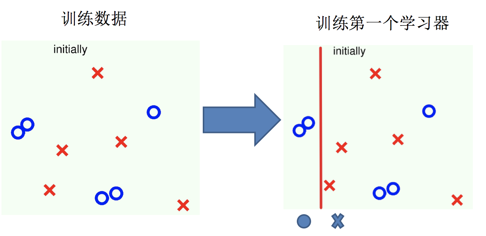
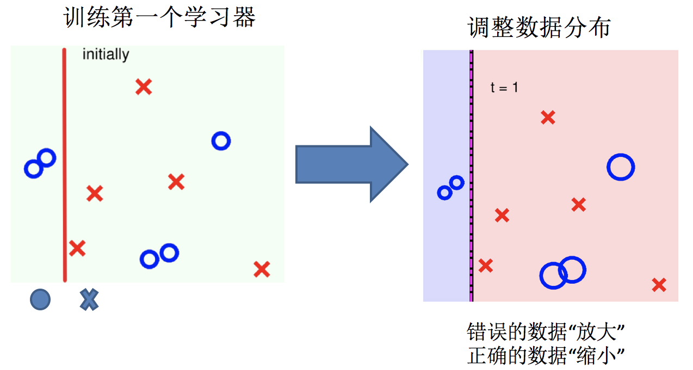
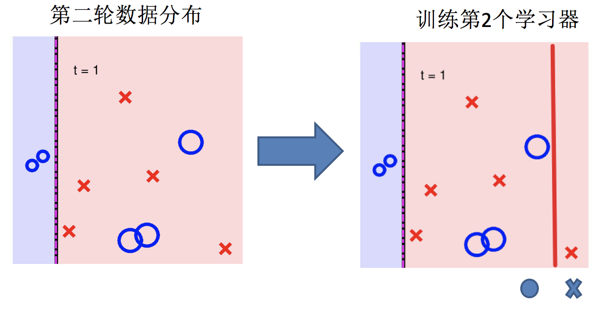
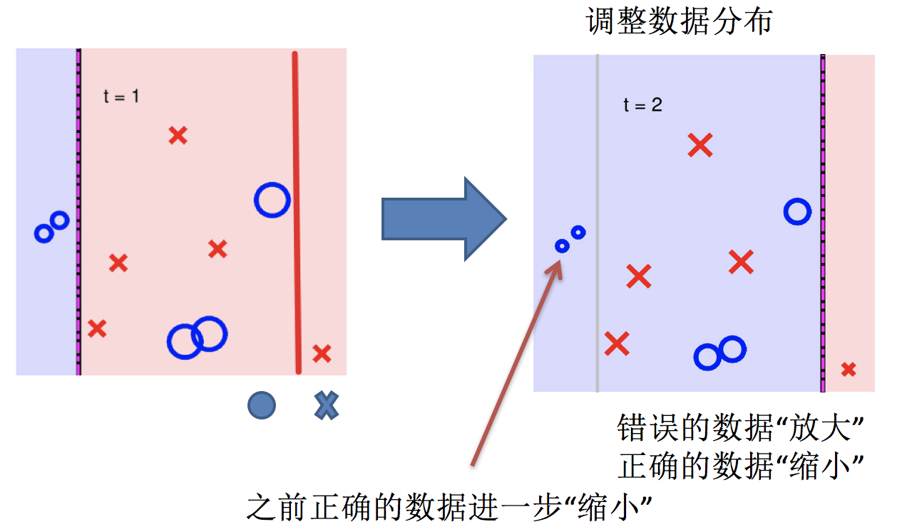
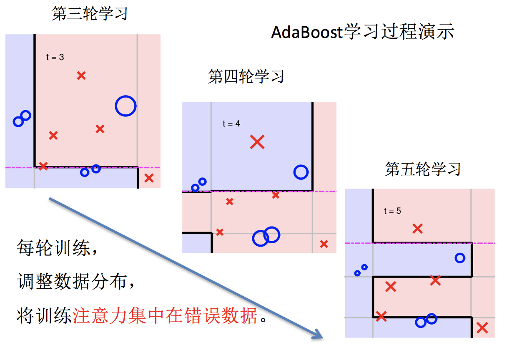
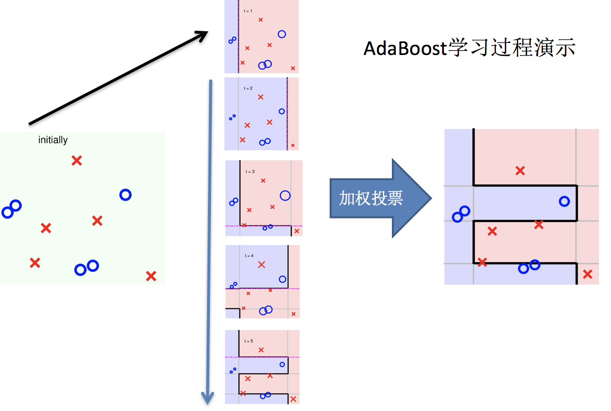
AdaBoost算法的两个核心步骤：
权值调整： AdaBoost算法提高那些被前一轮基分类器错误分类样本的权值，而降低那些被正确分类样本的权值。从而使得那些没有得到正确分类的样本，由于权值的加大而受到后一轮基分类器的更大关注。
基分类器组合： AdaBoost采用加权多数表决的方法。
-
分类误差率较小的弱分类器的权值大，在表决中起较大作用。
-
分类误差率较大的弱分类器的权值小，在表决中起较小作用。
【理解】AdaBoost算法推导
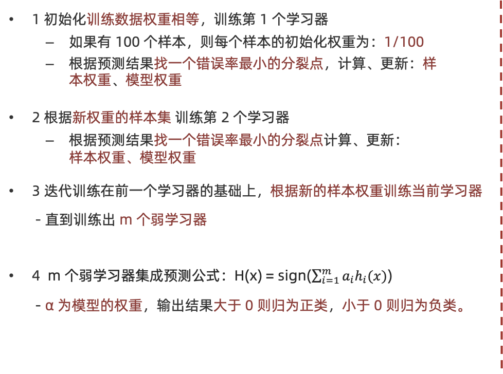
AdaBoost 模型公式中
- α 为模型的权重
- m 为弱学习器数量
- hi(x) 表示弱学习器
- H(x) 输出结果大于 0 则归为正类，小于 0 则归为负类。
AdaBoost 权重更新公式:
εt 表示第 t 个弱学习器的错误率
AdaBoost 样本权重更新公式:
- Zt 为归一化值（所有样本权重的总和）
- Dt(x) 为样本权重
- αt 为模型权重。
【理解】 AdaBoost 构建过程
下面为训练数数据，假设弱分类器由 x 产生，其阈值 v 使该分类器在训练数据集上的分类误差率最低，试用 Adaboost 算法学习一个强分类器。
- 构建第一个弱学习器
-
初始化工作：初始化 10 个样本的权重，每个样本的权重为：0.1
-
构建第一个基学习器：
-
寻找最优分裂点
- 对特征值 x 进行排序，确定分裂点为：0.5、1.5、2.5、3.5、4.5、5.5、6.5、7.5、8.5
- 当以 0.5 为分裂点时，有 5 个样本分类错误
- 当以 1.5 为分裂点时，有 4 个样本分类错误
- 当以 2.5 为分裂点时，有 3 个样本分类错误
- 当以 3.5 为分裂点时，有 4 个样本分类错误
- 当以 4.5 为分裂点时，有 5 个样本分类错误
- 当以 5.5 为分裂点时，有 4 个样本分类错误
- 当以 6.5 为分裂点时，有 5 个样本分类错误
- 当以 7.5 为分裂点时，有 4 个样本分类错误
- 当以 8.5 为分裂点时，有 3 个样本分类错误
- 最终，选择以 2.5 作为分裂点，计算得出基学习器错误率为：3/10=0.3
-
计算模型权重:
1/2 * np.log((1-0.3)/0.3)=0.4236 -
更新样本权重：
- 分类正确样本为：1、2、3、4、5、6、10 共 7 个，其计算公式为：e-αt，则正确样本权重变化系数为：e-0.4236 = 0.6547
- 分类错误样本为：7、8、9 共 3 个，其计算公式为：eαt，则错误样本权重变化系数为：e0.4236 = 1.5275
- 样本 1、2、3、4、5、6、10 权重值为：
0.06547 - 样本 7、8、9 的样本权重值为：
0.15275 - 归一化 Zt 值为：
0.06547 * 7 + 0.15275 * 3 = 0.9165 - 样本 1、2、3、4、5、6、10 最终权重值为：
0.07143 - 样本 7、8、9 的样本权重值为：
0.1667
-
此时得到：
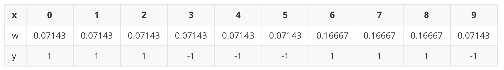
- 构建第二个弱学习器
-
寻找最优分裂点：
-
对特征值 x 进行排序，确定分裂点为：0.5、1.5、2.5、3.5、4.5、5.5、6.5、7.5、8.5
-
当以 0.5 为分裂点时，有 5 个样本分类错误，错误率为：0.07143 * 5 = 0.35715
-
当以 1.5 为分裂点时，有 4 个样本分类错误，错误率为：0.07143 * 1 + 0.16667 * 3 = 0.57144
-
当以 2.5 为分裂点时，有 3 个样本分类错误，错误率为：0.16667 * 3 = 0.57144
。。。 。。。
-
当以 8.5 为分裂点时，有 3 个样本分类错误，错误率为：0.07143 * 3 = 0.21429
-
最终，选择以 8.5 作为分裂点，计算得出基学习器错误率为：0.21429
-
计算模型权重：
1/2 * np.log((1-0.21429)/0.21429)=0.64963 -
分类正确的样本：1、2、3、7、8、9、10，其权重调整系数为：0.5222
-
分类错误的样本：4、5、6，其权重调整系数为：1.9148
-
分类正确样本权重值：
-
样本 0、1、2、、9 为：0.0373
-
样本 6、7、8 为：0.087
-
分类错误样本权重值：0.1368
-
归一化 Zt 值为：
0.0373 * 4 + 0.087 * 3 + 0.1368 * 3 = 0.8206 -
最终权重：
-
样本 0、1、2、9 为 ：0.0455
- 样本 6、7、8 为：0.1060
-
样本 3、4、5 为：0.1667
-
此时得到：
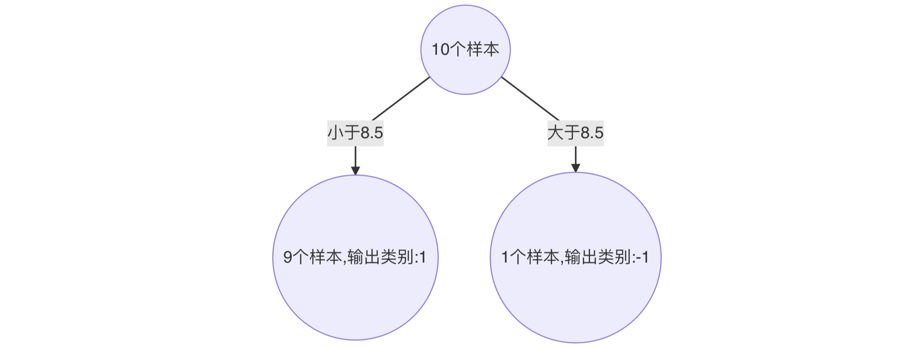
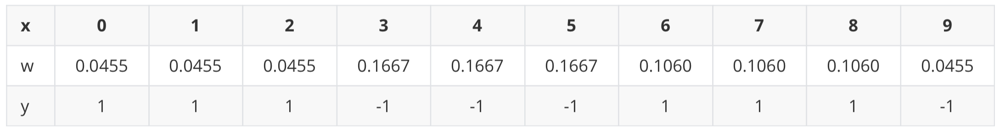
- 构建第三个弱学习器
错误率：0.1820，模型权重：0.7514
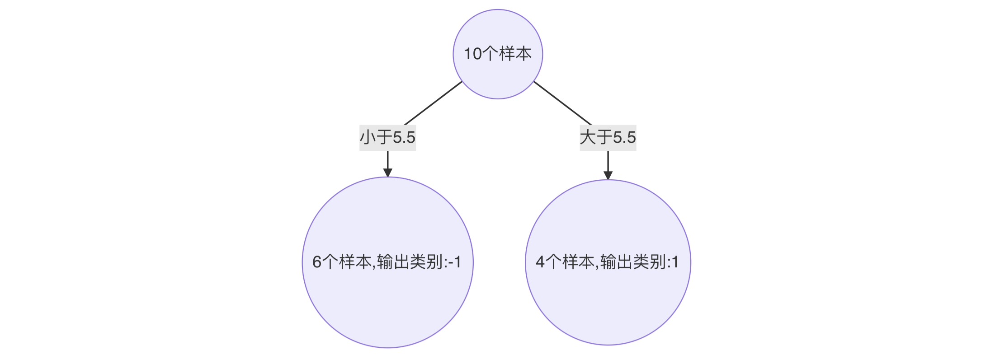
- 强学习器
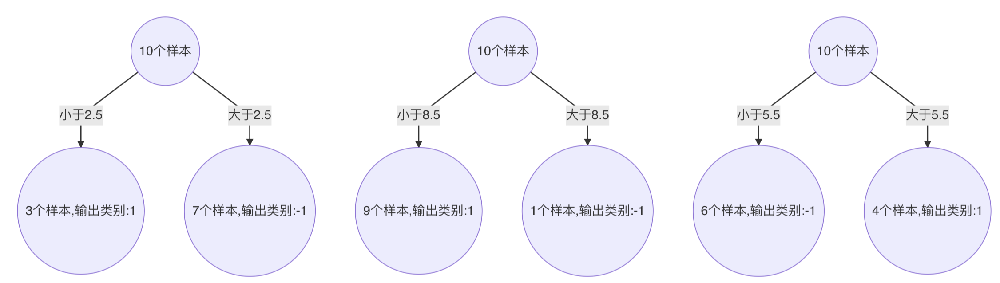
【实践】AdaBoost实战葡萄酒数据
葡萄酒分为白葡萄酒和红葡萄酒两类。 该分析涉及白葡萄酒，并基于数据集中显示的13个变量/特征： 固定酸度，挥发性酸度，柠檬酸，残留糖，氯化物，游离二氧化硫，总二氧化硫，密度，pH值，硫酸盐，酒精，质量等。为了评估葡萄酒的质量，我们提出的方法就是根据酒的物理化学性质与质量的关系，找出高品质的葡萄酒具体与什么性质密切相关，这些性质又是如何影响葡萄酒的质量。
import pandas as pd from sklearn.ensemble import AdaBoostClassifier from sklearn.metrics import classification_report from sklearn.model_selection import train_test_split from sklearn.tree import DecisionTreeClassifier df = pd.read_csv("data/wine0501.csv") X = df.drop(columns="Class label") y = df["Class label"] X_train, X_test, y_train, y_test = train_test_split( X, y, test_size=0.25, stratify=y, random_state=42 ) # 深度为 1 的决策树（树桩）作为弱学习器 model = AdaBoostClassifier( estimator=DecisionTreeClassifier(max_depth=1, random_state=42), n_estimators=200, learning_rate=0.05, random_state=42, ) model.fit(X_train, y_train) print(classification_report(y_test, model.predict(X_test), zero_division=0))
总结：AdaBosst预测准确了所有的训练集类标，与单层决策树相比，它在测试机上表现稍微好一些。单决策树对于训练数据过拟合的程度更加严重一些。总之，我们可以发现Adaboost分类器能够些许提高分类器性能，并且与bagging分类器的准确率接近.
GBDT
学习目标：
- 掌握提升树的算法原理思想
- 了解梯度提升树的原理思想
【理解】 提升树（Boosting Tree）
梯度提升树（Gradient Boosting Decision Tre）是提升树（Boosting Decision Tree）的一种改进算法，所以在讲梯度提升树之前先来介绍一下提升树。
假如有个人30岁，我们首先用20岁去拟合，发现损失有10岁，这时我们用6岁去拟合剩下的损失，发现差距还有4岁，第三轮我们用3岁拟合剩下的差距，差距就只有一岁了。如果我们的迭代轮数还没有完，可以继续迭代下面，每一轮迭代，拟合的岁数误差都会减小。最后将每次拟合的岁数加起来便是模型输出的结果。
【理解】梯度提升树
梯度提升树不再使用拟合残差，而是利用最速下降的近似方法，利用损失函数的负梯度作为提升树算法中的残差近似值。
假设:
- 我们前一轮迭代得到的强学习器是：fi-1(x)
- 损失函数是：L(y,fi−1(x))
- 本轮迭代的目标是找到一个弱学习器：hi(x)
- 让本轮的损失最小化: L(y, fi(x))=L(y, fi−1(x)) + hi(x))
当采用平方损失函数时:
则:
损失函数为平方损失, 则每个样本要拟合的负梯度为:
此时, 我们发现 GBDT 拟合的负梯度就是残差，或者说对于回归问题，拟合的目标值就是残差。
如果我们的 GBDT 进行的是分类问题，则损失函数变为 logloss，此时拟合的目标值就是该损失函数的负梯度值。
【理解】GBDT例子
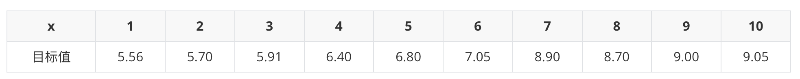
- 初始化弱学习器（CART树）
我们通过计算当模型预测值为何值时，会使得第一个基学习器的平方误差最小，即：求损失函数对 f(xi) 的导数，并令导数为0.
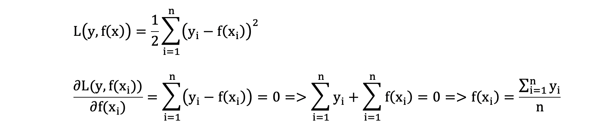
- 构建第一个弱学习器（CART树）
由于我们拟合的是样本的负梯度，即：
由此得到数据表如下：
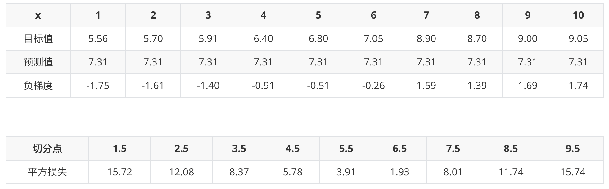
上表中平方损失计算过程说明（以切分点1.5为例）：
切分点1.5 将数据集分成两份 [5.56],[5.56 5.7 5.91 6.4 6.8 7.05 8.9 8.7 9. 9.05]
第一份的平均值为5.56 第二份数据的平均值为（5.7+5.91+6.4+6.8+7.05+8.9+8.7+9+9.05）/9 = 7.5011
由于是回归树，每份数据的平均值即为预测值，则可以计算误差，第一份数据的误差为0，第二份数据的平方误差为 :
$(5.70-7.5011)^2+(5.91-7.5011)^2+...+(9.05-7.5011)^2 = 15.72308$
以 6.5 作为切分点损失最小，构建决策树如下：
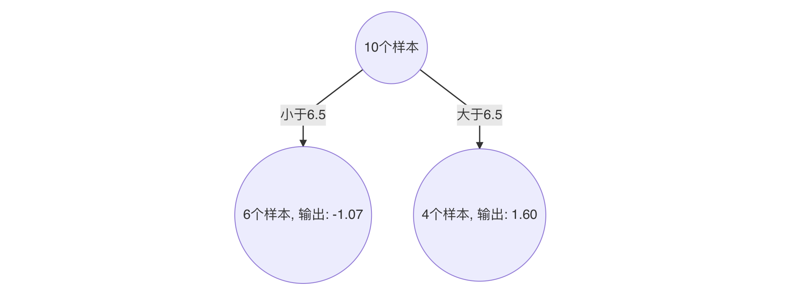
- 构建第二个弱学习器（CART树）
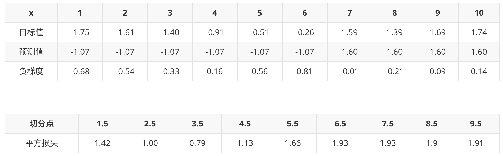
以 3.5 作为切分点损失最小，构建决策树如下：
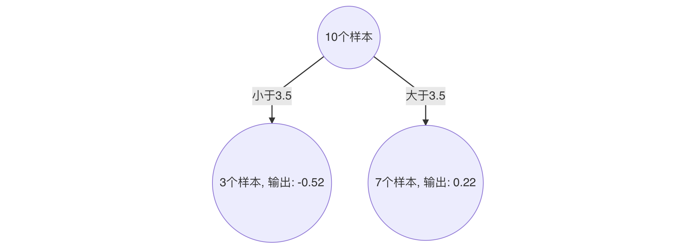
- 构建第三个弱学习器（CART树）
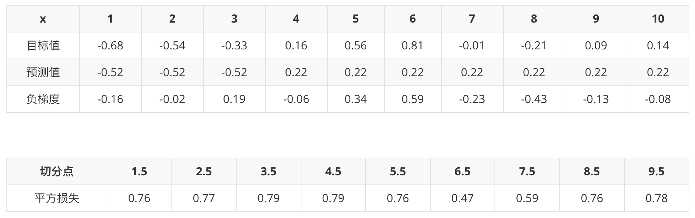
以 6.5 作为切分点损失最小，构建决策树如下：
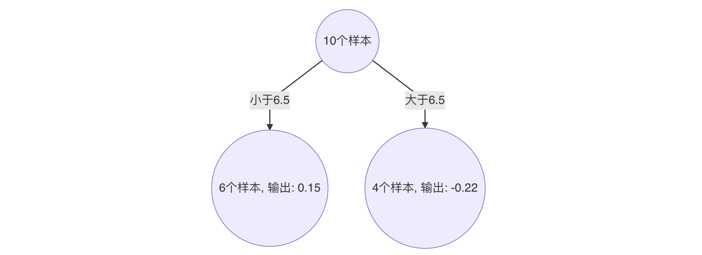
- 最终强学习器
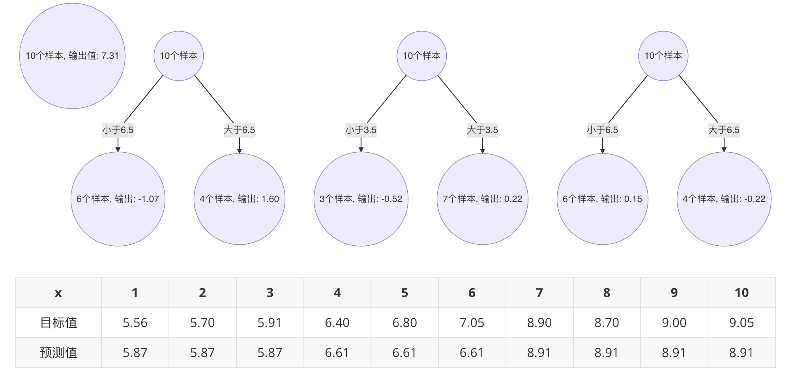
- GBDT算法流程
1 初始化弱学习器（目标值的均值作为预测值）
2 迭代构建学习器，每一个学习器拟合上一个学习器的负梯度
3 直到达到指定的学习器个数
4 当输入未知样本时，将所有弱学习器的输出结果组合起来作为强学习器的输出
【实践】泰坦尼克号案例实战
该案例是在随机森林的基础上修改的，可以对比理解
import pandas as pd from sklearn.compose import ColumnTransformer from sklearn.ensemble import GradientBoostingClassifier from sklearn.impute import SimpleImputer from sklearn.metrics import accuracy_score from sklearn.model_selection import train_test_split from sklearn.pipeline import Pipeline from sklearn.preprocessing import OneHotEncoder df = pd.read_csv("data/train.csv") features = ["Pclass", "Sex", "Age", "Fare", "Embarked"] X, y = df[features], df["Survived"] X_train, X_test, y_train, y_test = train_test_split( X, y, test_size=0.2, stratify=y, random_state=42 ) preprocess = ColumnTransformer([ ("num", SimpleImputer(strategy="median"), ["Pclass", "Age", "Fare"]), ("cat", Pipeline([ ("imputer", SimpleImputer(strategy="most_frequent")), ("onehot", OneHotEncoder(handle_unknown="ignore", sparse_output=False)), ]), ["Sex", "Embarked"]), ]) model = Pipeline([ ("preprocess", preprocess), ("gbdt", GradientBoostingClassifier( n_estimators=150, learning_rate=0.05, max_depth=3, random_state=42 )), ]) model.fit(X_train, y_train) print("测试集准确率：", accuracy_score(y_test, model.predict(X_test)))
XGBoost
学习目标：
1.知道XGBoost算法的思想
2.理解XGBoost目标函数
3.了解XGBoost的算法API
4.实现红酒品质预测案例
XGBoost（Extreme Gradient Boosting）全名叫极端梯度提升树，XGBoost是集成学习方法的王牌，在Kaggle数据挖掘比赛中，大部分获胜者用了XGBoost。
XGBoost在绝大多数的回归和分类问题上表现的十分顶尖
【知道】XGBoost算法思想
XGBoost 是对GBDT的改进：
- 求解损失函数极值时使用泰勒二阶展开
- 在损失函数中加入了正则化项
- XGB 自创一个树节点分裂指标。这个分裂指标就是从损失函数推导出来的。XGB 分裂树时考虑到了树的复杂度。
构建最优模型的方法是最小化训练数据的损失函数 。
预测值和真实值经过某个函数计算出损失，并求解所有样本的平均损失，并且使得损失最小。这种方法训练得到的模型复杂度较高，很容易出现过拟合。因此，为了降低模型的复杂度，在损失函数中添加了正则化项，如下所示：：
提高模型对未知数据的泛化能力。
【理解】XGboost的目标函数
XGBoost（Extreme Gradient Boosting）是对梯度提升树的改进，并且在损失函数中加入了正则化项。
目标函数的第一项表示整个强学习器的损失，第二部分表示强学习器中 K 个弱学习器的复杂度。
xgboost 每一个弱学习器的复杂度主要从两个方面来考量：
- γT 中的 T 表示一棵树的叶子结点数量，γ 是对该项的调节系数
- λ||w||2 中的 w 表示叶子结点输出值组成的向量，λ 是对该项的调节系数
- 模型复杂度的介绍
假设我们要预测一家人对电子游戏的喜好程度，考虑到年轻和年老相比，年轻更可能喜欢电子游戏，以及男性和女性相比，男性更喜欢电子游戏，故先根据年龄大小区分小孩和大人，然后再通过性别区分开是男是女，逐一给各人在电子游戏喜好程度上打分，如下图所示：
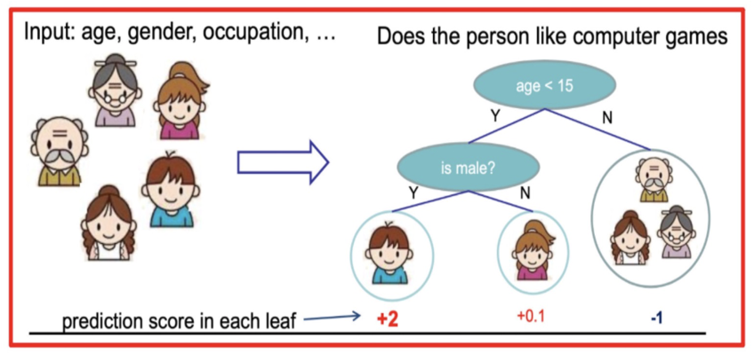
就这样，训练出了2棵树tree1和tree2，类似之前gbdt的原理，两棵树的结论累加起来便是最终的结论，所以：
- 小男孩的预测分数就是两棵树中小孩所落到的结点的分数相加：2 + 0.9 = 2.9。
- 爷爷的预测分数同理：-1 + 0.9 = -0.1。
具体如下图所示：
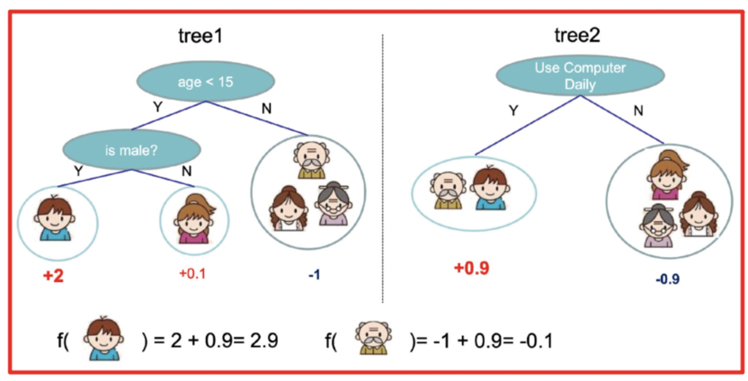
如下树tree1的复杂度表示为：
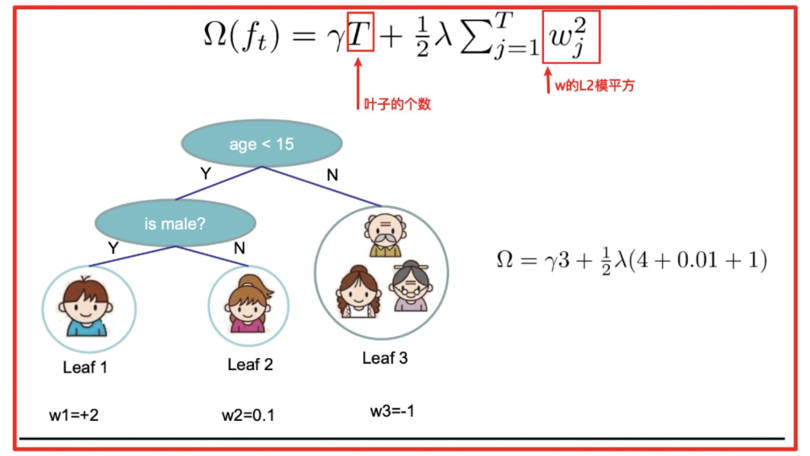
- 泰勒公式展开
我们直接对目标函数求解比较困难，通过泰勒展开将目标函数换一种近似的表示方式。接下来对 yi(t-1) 进行泰勒二阶展开，得到如下近似表示的公式：
其中，gi 和 hi 的分别为损失函数的一阶导、二阶导：
- 化简目标函数
我们观察目标函数，发现以下两项都是常数项，我们可以将其去掉。
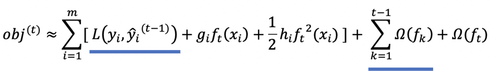
为什么说是常数项呢？这是因为当前学习器之前的学习器都已经训练完了，可以直接通过样本得出结果。化简之后的结果为：
我们再将 Ω(ft) 展开，结果如下：
这个公式中只有 ft ，该公式可以理解为，当前这棵树如何构建能够降低损失。
- 问题再次转换
我们再次理解下这个公式表示的含义：
- gi 表示每个样本的一阶导，hi 表示每个样本的二阶导
- ft(xi) 表示样本的预测值
- T 表示叶子结点的数目
- ||w||2 由叶子结点值组成向量的模
现在，我们发现公式的各个部分考虑的角度不同，有的从样本角度来看，例如：ft(xi) ，有的从叶子结点的角度来看，例如：T、||w||2。我们下面就要将其转换为相同角度的问题，这样方便进一步合并项、化简公式。我们统一将其转换为从叶子角度的问题：
例如：10 个样本，落在 D 结点 3 个样本，落在 E 结点 2 个样本，落在 F 结点 2 个样本，落在 G 结点 3 个样本
-
D 结点计算： w1 * gi1 + w1 * gi2 + w1 * gi3 = (gi1 + gi2 + gi3) * w1
-
E 结点计算： w2 * gi4 + w2 * gi5 = (gi4 + gi5) * w2
-
F 结点计算： w3 * gi6 + w3 * gi6 = (gi6 + gi7) * w3
- G 节点计算：w4 * gi8 + w4 * gi9 + w4 * gi10 = (gi8 + gi9 + gi10) * w4
gi ft(xi) 表示样本的预测值，我们将其转换为如下形式：
- wj 表示第 j 个叶子结点的值
- gi 表示每个样本的一阶导
hift2(xi) 转换从叶子结点的问题，如下：
λ||w||2 由于本身就是从叶子角度来看，我们将其转换一种表示形式：
我们重新梳理下整理后的公式，如下：
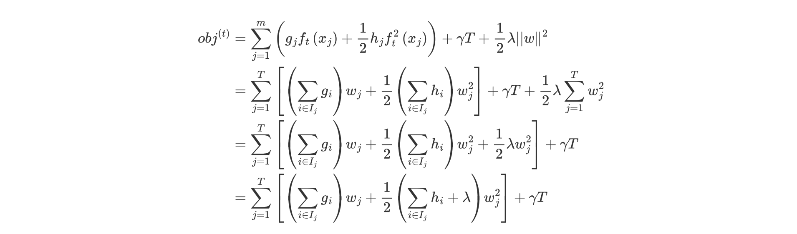
上面的公式太复杂了，我们令：
Gi 表示样本的一阶导之和，Hi 表示样本的二阶导之和，当确定损失函数时，就可以通过计算得到结果。
现在我们的公式变为：
- 对叶子结点求导
此时，公式可以看作是关于叶子结点 w 的一元二次函数，我们可以对 w 求导并令其等于 0，可得到 w 的最优值，将其代入到公式中，即可再次化简上面的公式。
将 wj 代入到公式中，即可得到：
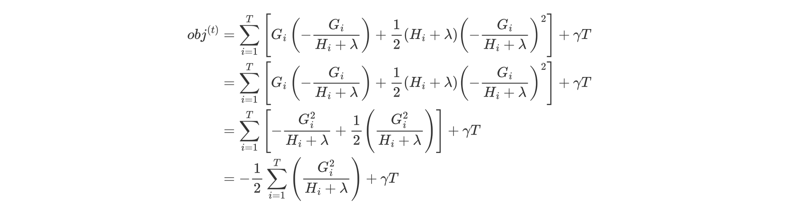
- XGBoost的树构建方法
该公式也叫做打分函数 (scoring function)，它可以从树的损失函数、树的复杂度两个角度来衡量一棵树的优劣。
这个公式，我们怎么用呢？
当我们构建树时，可以用来选择树的最佳划分点。
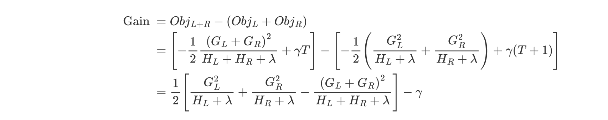
其过程如下：
- 对树中的每个叶子结点尝试进行分裂
- 计算分裂前 - 分裂后的分数：
- 如果gain > 0，则分裂之后树的损失更小，我们会考虑此次分裂
- 如果gain< 0，说明分裂后的分数比分裂前的分数大，此时不建议分裂
- 当触发以下条件时停止分裂：
- 达到最大深度
- 叶子结点样本数量低于某个阈值
- 等等...
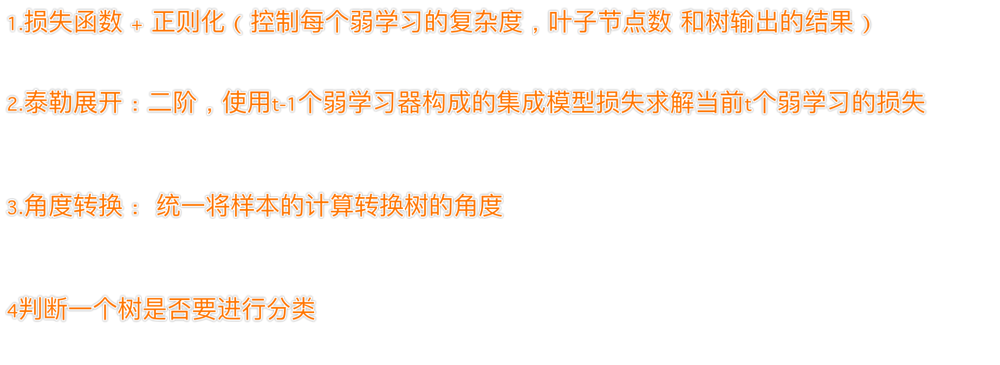
【了解】XGboost API
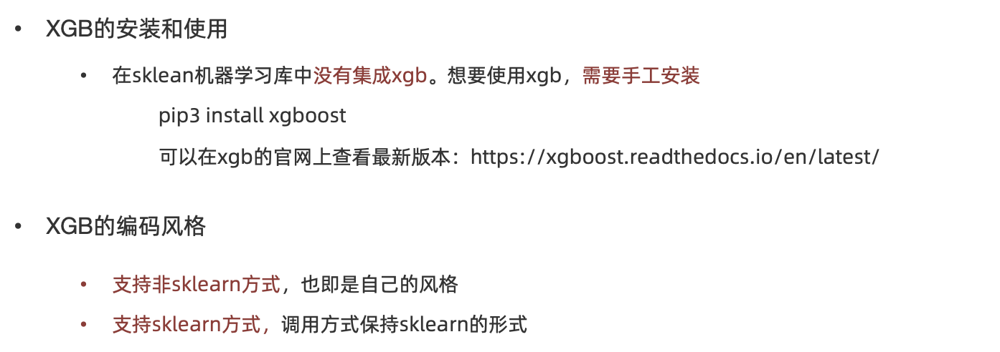
bst = XGBClassifier(n_estimators, max_depth, learning_rate, objective)
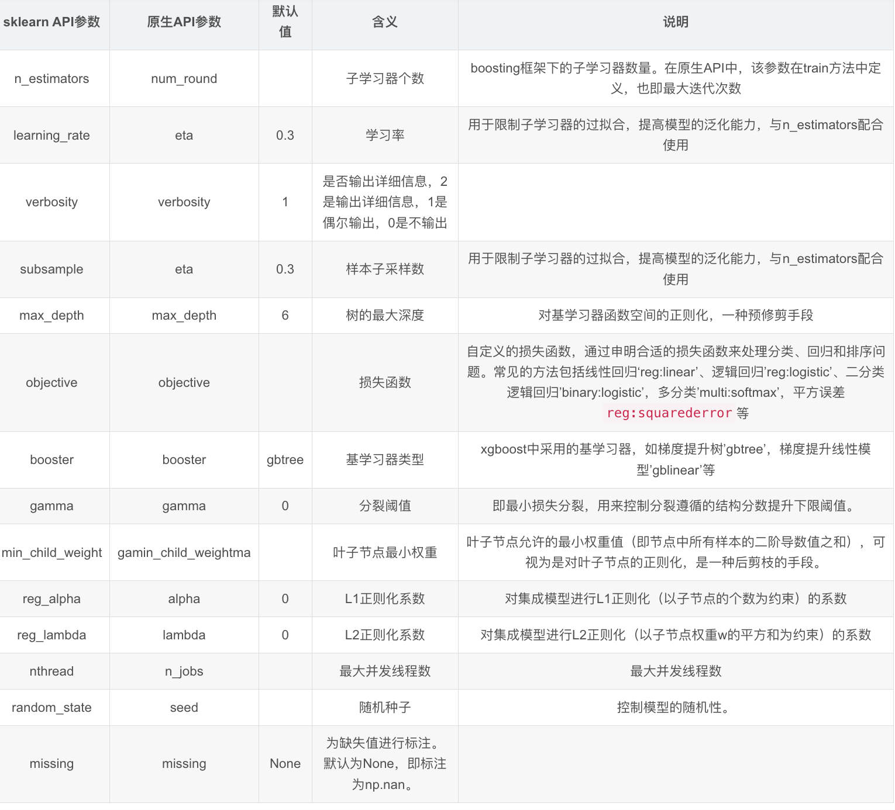
【实践】红酒品质预测
数据集介绍
数据集共包含 11 个特征，共计 3269 条数据. 我们通过训练模型来预测红酒的品质, 品质共有 6 个各类别，分别使用数字: 1、2、3、4、5 来表示。
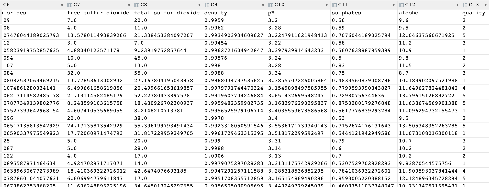
案例实现
- 导入需要的库文件
# 首次运行前安装：pip install xgboost import joblib import numpy as np import pandas as pd from sklearn.metrics import accuracy_score from sklearn.model_selection import GridSearchCV, StratifiedKFold, train_test_split from sklearn.utils.class_weight import compute_sample_weight from xgboost import XGBClassifier
- 数据基本处理
df = pd.read_csv("data/红酒品质分类.csv") X = df.drop(columns="quality") # XGBoost 多分类标签需从 0 开始连续编号 y = df["quality"] - df["quality"].min() X_train, X_test, y_train, y_test = train_test_split( X, y, test_size=0.2, stratify=y, random_state=42 ) print("训练集形状：", X_train.shape) print("类别分布：\n", y_train.value_counts(normalize=True).sort_index())
- 模型基本训练
sample_weight = compute_sample_weight(class_weight="balanced", y=y_train) model = XGBClassifier( objective="multi:softprob", num_class=y.nunique(), n_estimators=200, max_depth=4, learning_rate=0.05, subsample=0.8, colsample_bytree=0.8, eval_metric="mlogloss", tree_method="hist", random_state=42, ) model.fit(X_train, y_train, sample_weight=sample_weight) y_pred = model.predict(X_test) print("测试集准确率：", accuracy_score(y_test, y_pred)) joblib.dump(model, "xgboost_wine.joblib")
- 模型参数调优
param_grid = { "n_estimators": [100, 200, 400], "max_depth": [3, 4, 6], "learning_rate": [0.03, 0.05, 0.1], "subsample": [0.8, 1.0], } cv = StratifiedKFold(n_splits=5, shuffle=True, random_state=42) search = GridSearchCV( estimator=XGBClassifier( objective="multi:softprob", num_class=y.nunique(), eval_metric="mlogloss", tree_method="hist", random_state=42, ), param_grid=param_grid, scoring="accuracy", cv=cv, n_jobs=-1, ) search.fit( X_train, y_train, sample_weight=compute_sample_weight(class_weight="balanced", y=y_train), ) print("最佳参数：", search.best_params_) print("测试集准确率：", search.score(X_test, y_test))
作业
1.使用思维导图总结集成学习部分的内容
2.说明集成学习的方式
3.实现本部分所有的案例